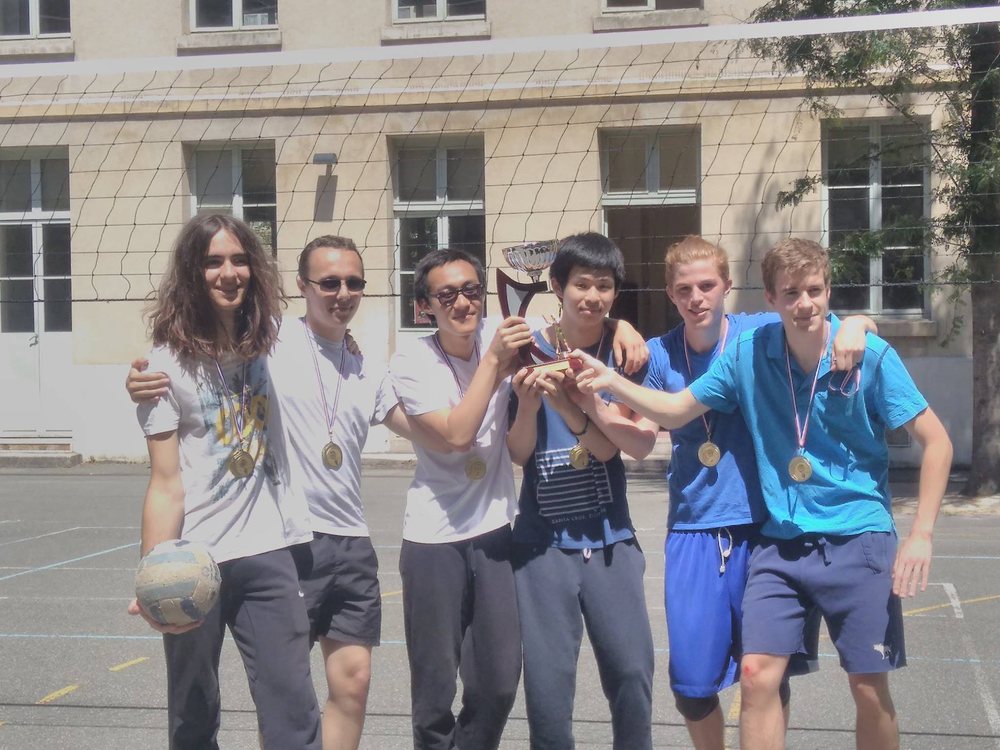
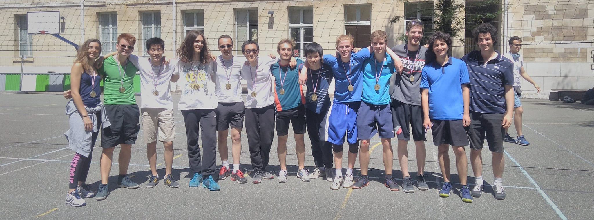
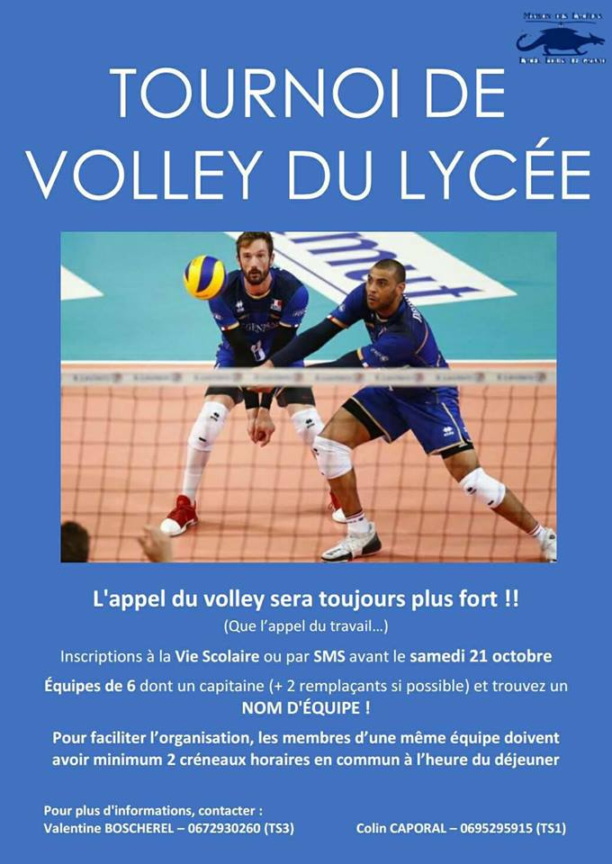

| ◄◄ CONCERTS ET PIECES DE THEATRE | RETOUR A LA PAGE DE PRESENTATION | MARDI GRAS ►► |
|
Chaque année a lieu le tournoi de volley du lycée. Ce dernier est organisé et arbitré par des élèves. Il commence la plupart du temps au début de l'année par une phase de poule. Si vous souhaitez y participer, formez vous une équipe de 6 joueurs au minimum (qu'ils soient dans la même classe ou non) et inscrivez vous à la vie scolaire avant la date limite!


Ci dessous, les vainqueurs de l'année 2016/2017, l'équipe 32-32 ! |
 |